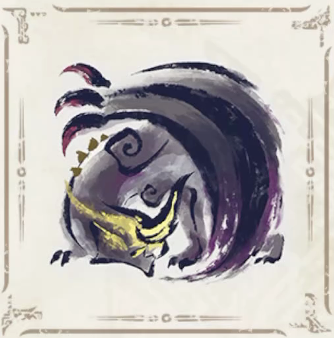

Actividad de la clase
Cambiar las imagenes con width y height, el orden de las imagenes es la primera es lo original, la siguiente la que se ajusto con width, la siguiente es la que se ajusto con width y height y la ultima la imagen rara, ademas cada imagen redirecciona a otra pagina y si se desea volver a inicio se debe volver a presionar la misma imagen
El original y unico Gore Magala

La media evolucion Gore Magala Caotico
La perfeccion Shagaru Magala
El alterado Shagaru Magala Elevado